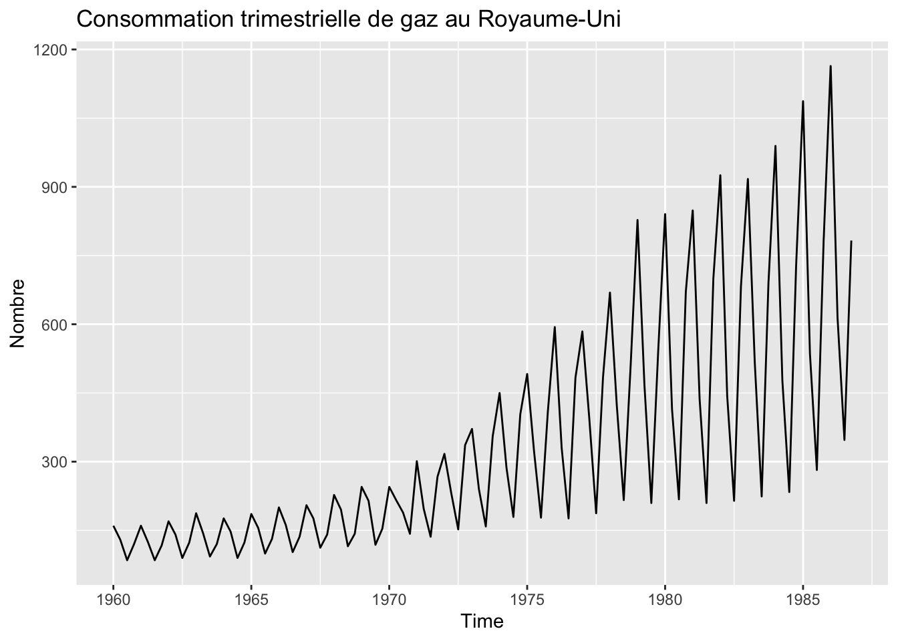

library(dplyr)
library(stats)
lag(AirPassengers)Exercice 1 Une série temporelle est un processus stochastique, dont on n’observe qu’une réalisation.
A. Vrai
B. Faux
Exercice 2 Que va donner le code suivant :
A. Une erreur car le chargement du package dplyr masque la fonction stats::lag
B. Ma série retardée car j’ai chargé le package stats après le package dplyr
Exercice 3 Je souhaite calculer la série différenciée à l’ordre 12 et la série retardée de 1 mois de la série AirPassengers. Quelles fonctions faut-il utiliser ?
A. stats::diff(AirPassengers, 12) et stats::lag(AirPassengers, 1)
B. stats::diff(AirPassengers, -12) et stats::lag(AirPassengers, 1)
C. stats::diff(AirPassengers, 12) et stats::lag(AirPassengers, -1)
D. stats::diff(AirPassengers, -12) et stats::lag(AirPassengers, -1)
Exercice 4 Quel package permet de manipuler des séries temporelles avec le language du tidyverse .
A. stats
B. xts
C. stats
D. tsibble
Exercice 5 À quel autocorrélogramme est associé à la série suivante ?

A. Image A
B. Image B
C. Image C
D. Image D
Exercice 6 À quelle composante est associé le périodogramme suivant :
set.seed(1)
s <- ts(cos(2*pi/12*(1:100)) + sin(2*pi/12*(1:100)), frequency = 12, start = 2000)
spectrum(s,
detrend = FALSE,
method = "pgram", log = "no")A. Tendance
B. Cycle
C. Saisonnalité
D. Irrégulier
Exercice 7 À quelle composante est associé le périodogramme suivant :
set.seed(1)
i = ts(rnorm(100), frequency = 12, start = 2000)
spectrum(i,
detrend = FALSE,
method = "pgram", log = "no")
A. Tendance
B. Cycle
C. Saisonnalité
D. Irrégulier
Exercice 8 La transformation de Box-Cox est-elle adaptée à la série suivante ?
library(forecast, quietly = FALSE, warn.conflicts = FALSE)
forecast::autoplot(expsmooth::cangas, ylab = NULL)A. Oui
B. Oui mais seulement avant 1972
C. Non
Exercice 9 Est-ce que je peux directement utiliser la fonction stl() pour désaisonnaliser cette série ?
forecast::autoplot(AirPassengers)
A. Non car le saisonnalité est multiplicative
B. Oui car stl() détecte la type de saisonnalité
Exercice 10 Quel modèle peut-on utiliser pour prévoir le cours de clôture du CAC 40 ?
y = window(EuStockMarkets[,"CAC"], start = 1998)
autoplot(y, y = "Niveau",
main = "Cours de clôture du CAC 40")A. Moyenne des valeurs passées
B. Dernière date connue
C. Valeur de l’année passée
Exercice 11 Quel modèle est retenu pour cette série ?
forecast::ets(co2, damped = FALSE)ETS(M,A,A)
Call:
forecast::ets(y = co2, damped = FALSE)
Smoothing parameters:
alpha = 0.5995
beta = 0.0065
gamma = 0.129
Initial states:
l = 315.2927
b = 0.0772
s = -0.8309 -1.8609 -3.0483 -2.782 -1.2615 0.7793
2.1909 2.7066 2.1724 1.2282 0.6624 0.0439
sigma: 9e-04
AIC AICc BIC
1748.989 1750.349 1819.513 A. Tendance multiplicative, Saisonnalité additive, bruit additif
B. Tendance additive, Saisonnalité multiplicative, bruit additif
C. Tendance additive, Saisonnalité additive, bruit multiplicatif
Exercice 12 Quel modèle ARIMA parait plausible pour modéliser le cours de clôture du CAC 40 ?
y = window(EuStockMarkets[,"CAC"], start = 1998)
autoplot(y, y = "Niveau",
main = "Cours de clôture du CAC 40")A. ARIMA(1,0,0)
B. ARIMA(1,0,1)
C. ARIMA(0,0,1)
D. ARIMA(0,1,0)
Exercice 13 Si une série comporte une tendance linéaire et une saisonnalité mensuelle, quelle différenciation faut-il faire ?
A. Régulière : \(X_t - X_{t-1}\)
B. Saisonnière : \(X_t - X_{t-12}\)
C. Saisonnière et régulière.
Exercice 14 Sur des séries journalières, quelle méthode privilégier pour prendre en compte la saisonnalité ?
A. En ajoutant des indicatrices
B. En différenciant la série
C. En ajoutant des régresseurs de Fourier
D. Toutes ces méthodes
Exercice 15 Pour comparer la qualité prédictive d’un modèle exponentiel et d’un modèle ARIMA, je peux utiliser l’AIC.
A. Vrai
B. Faux